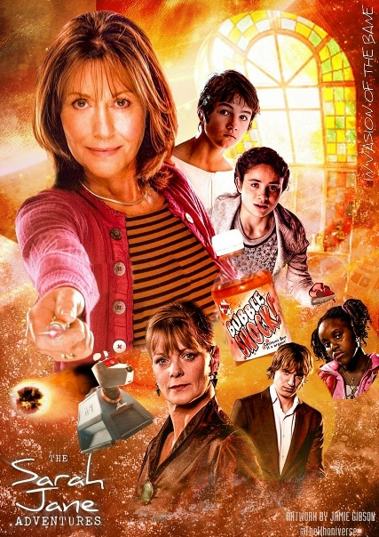

Эра Десятого Доктора
||| 0. Вторжение Бэйнов ||| ДАЛЬШЕ >>>
или
<<< НАЗАД к сериалу "Доктор Кто"
MVO ВГТРК, VO А. Кузнецов или Original [ENG]
Субтитры: отсутствуют

Invasion of the Bane
Дата выхода: 1 января 2007
Формат: 60-минутный пилотный эпизод
| Варианты озвучек: | * Разные: смотрите по инструкции |
|---|---|
| Скачивание и просмотр: |
Журналистка Сара Джейн Смит объединяется с ее новой тринадцатилетней соседкой, Марией Джексон, против Миссис Вормвуд, главы компании, производящей популярный безалкогольного напиток под названием «Пузырьковый Шок!», за которым скрывается инопланетный заговор.


Трейлер: